Vollkeramik
Hochästhetische Versorgungen aus Zirkonoxid und IPS e.max.
Mehr über Vollkeramik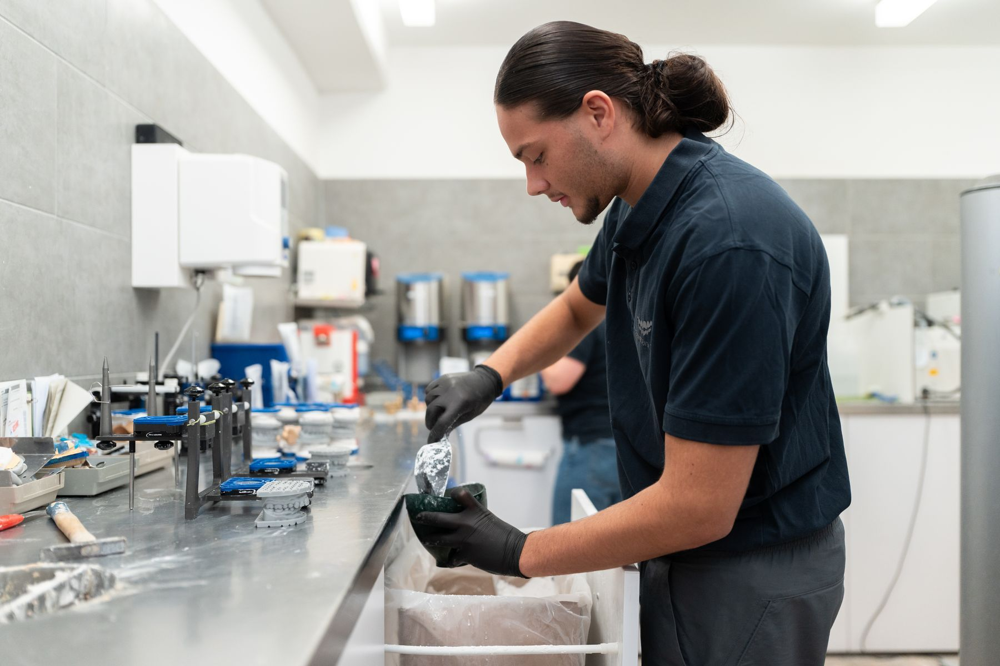
Ihr Dentallabor in Berlin-Steglitz: zahntechnisches Handwerk und digitale Fertigung unter einem Dach. Für Praxen, die präzise Ergebnisse und verlässliche Abläufe erwarten.
In unserem Labor in Berlin-Steglitz entstehen Arbeiten, die in Funktion, Ästhetik und Passung überzeugen. Mit eigenen Maschinen und dem Blick fürs Detail.
Viele Arbeitsschritte entstehen direkt bei uns im Haus. Kurze Wege, kontrollierte Qualität.
Oralscandaten, CAD/CAM und 3D-Druck fließen zuverlässig in die Fertigung ein.
Materialverständnis und Formgefühl aus 60 Jahren zahntechnischer Praxis.
Fachliche Fragen klären wir direkt, ohne Umwege und auf Augenhöhe.
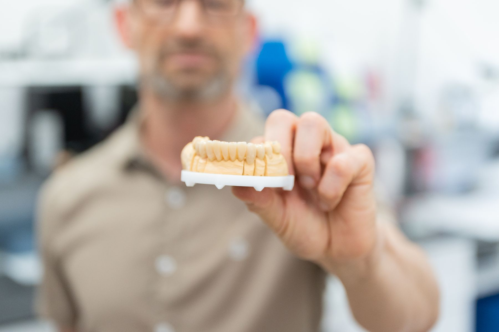
Von Vollkeramik und Implantatprothetik bis zu Schienen, Prothetik und digitaler Fertigung.
Hochästhetische Versorgungen aus Zirkonoxid und IPS e.max.
Mehr über VollkeramikVon der Bohrschablone bis zur Suprakonstruktion, abgestimmt mit Praxis und Chirurgie.
Mehr über ImplantatprothetikPräzise gefertigte Konstruktionen aus hochwertigen Materialien, auch als NEM-Arbeiten.
Mehr über Kronen und BrückenPassgenaue Schienen auf Basis klassischer Unterlagen oder digitaler Oralscandaten.
Mehr über AufbissschienenVollprothetik, Interimsprothesen und digitale Totalprothesen.
Mehr über ProthetikModerne Fertigung für Modelle, Schienen und präzise zahntechnische Arbeiten.
Mehr über 3D-Druck und CAD/CAMMit CAD/CAM-Technik, 5-Achs-Frästechnik und 3D-Druck verarbeiten wir klassische Unterlagen ebenso wie digitale Praxisdaten, kontrolliert und nachvollziehbar.
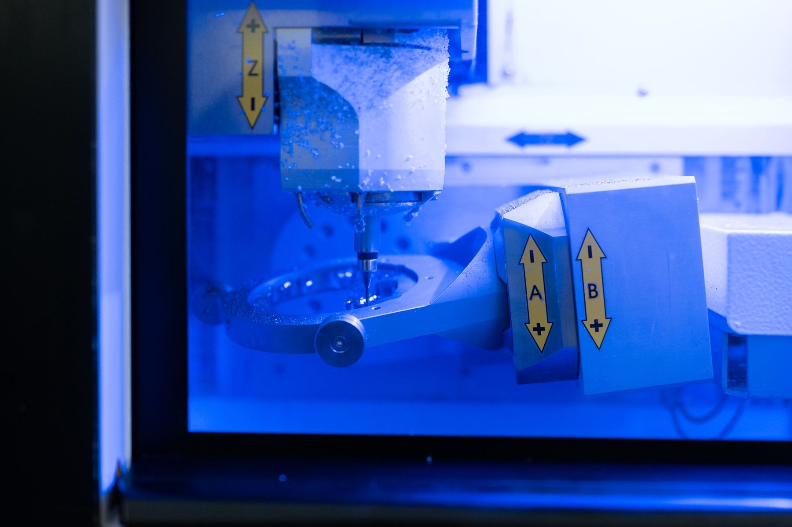
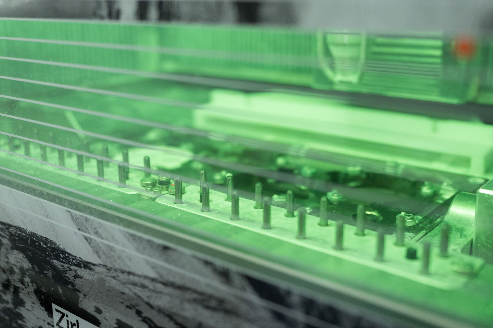
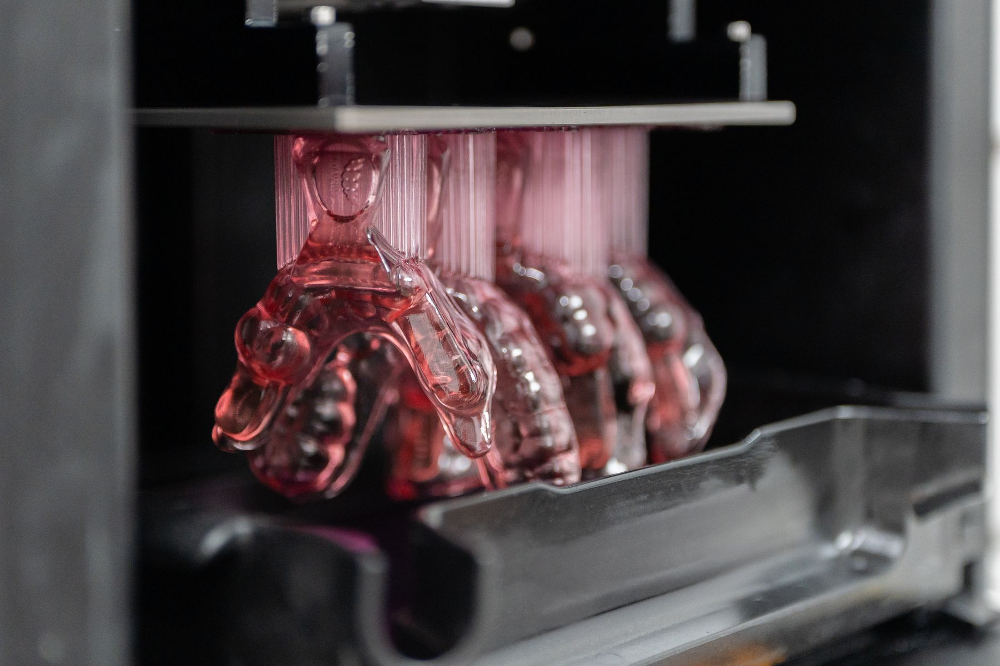
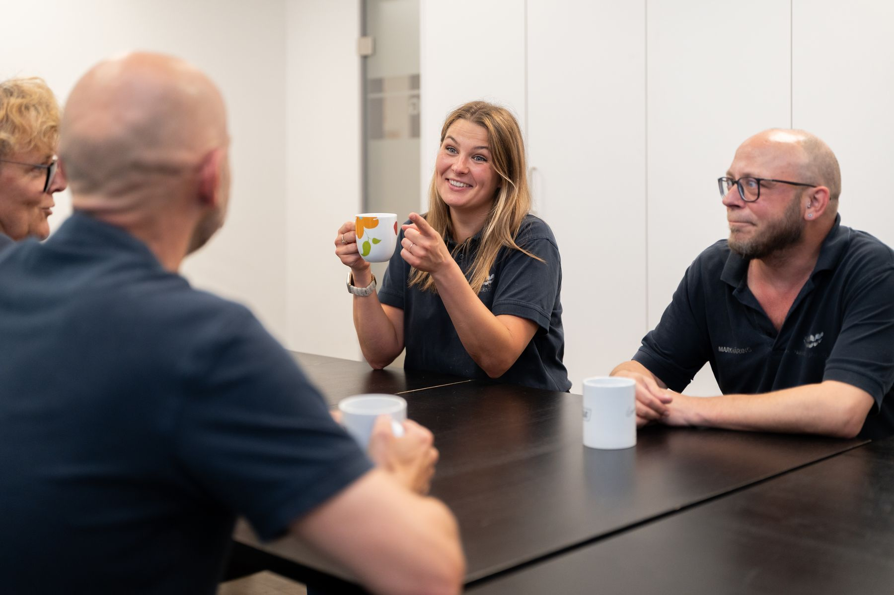
Oft beginnt eine neue Zusammenarbeit mit kleineren Arbeiten. So entsteht Vertrauen, ohne Druck und ohne komplizierten Prozess.
Kurzes Gespräch vor Ort, in Ihrer Praxis oder bei uns im Labor.
Wir klären, wie Fälle, Scans oder Abdrücke übermittelt werden.
Der Einstieg kann mit einzelnen, unverfänglichen Fällen beginnen.
Wenn alles passt, entwickeln wir die Zusammenarbeit Schritt für Schritt weiter.
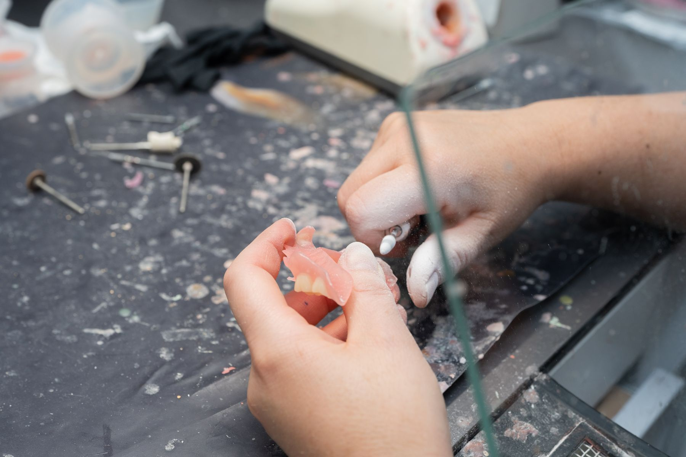
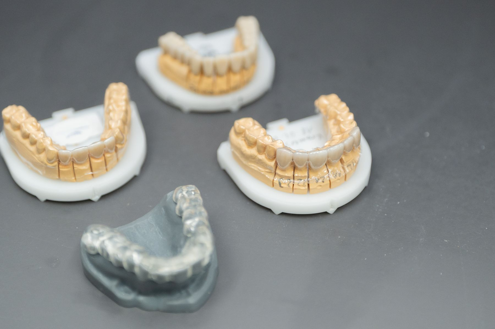
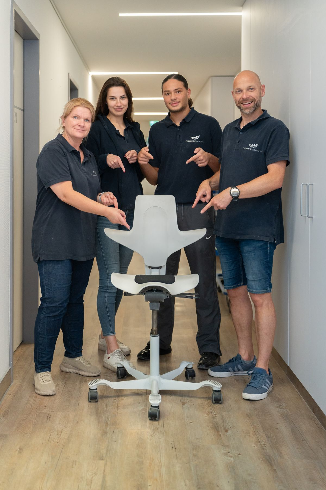
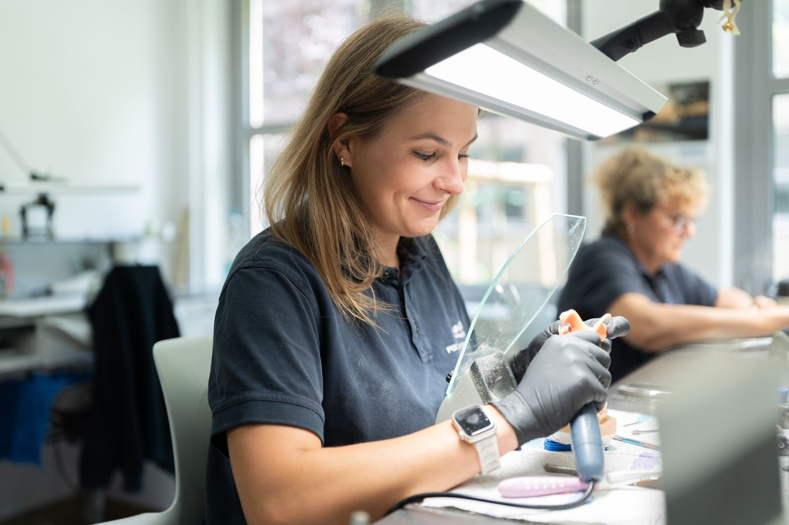
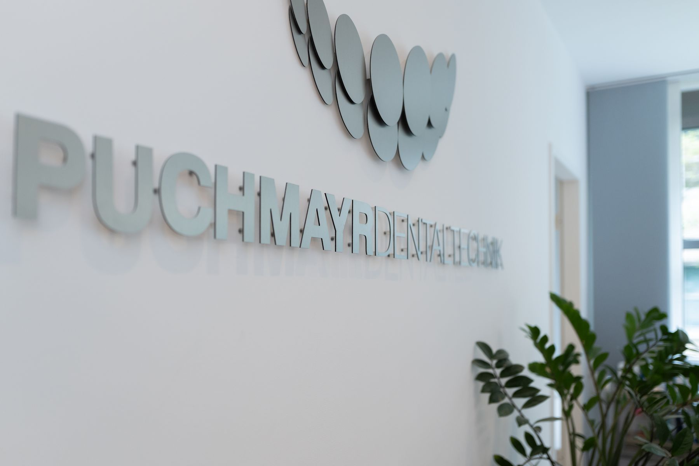
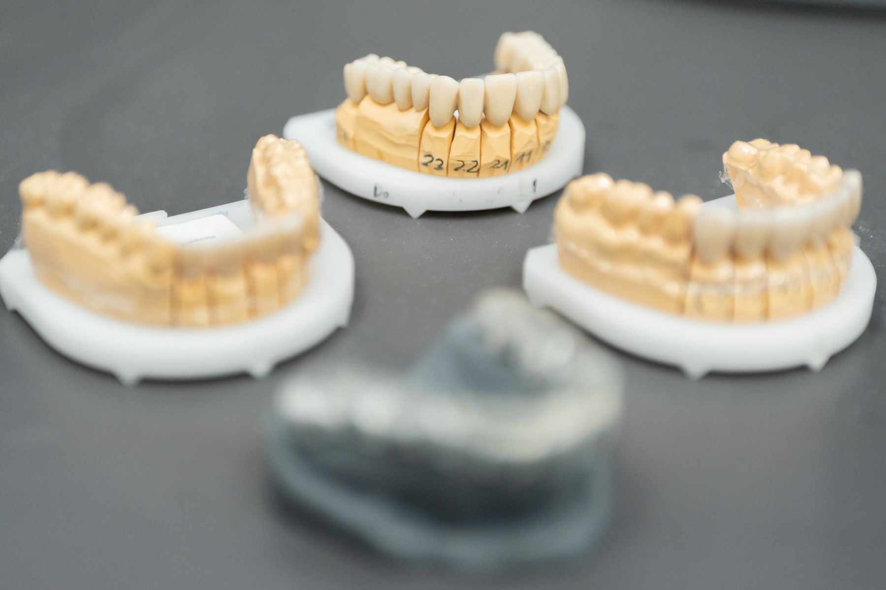
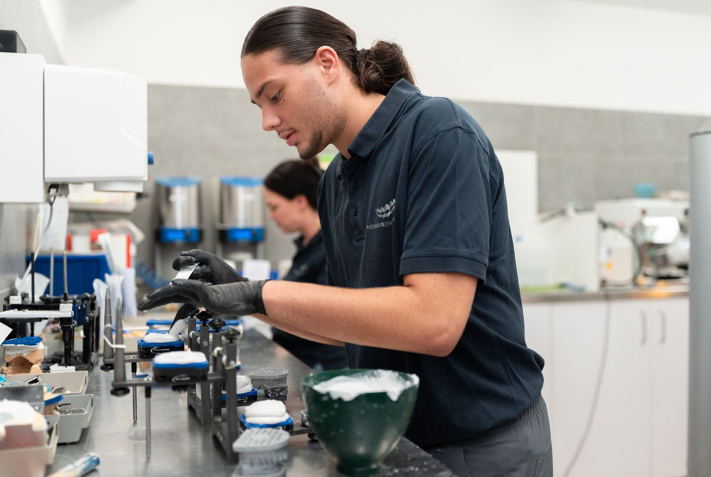
Am 20. November 2024 wurde Puchmayr Dentaltechnik im Auditorium Friedrichstraße mit dem Berliner Inklusionspreis in der Kategorie „Inklusive Beschäftigung, Mittelständische Unternehmen" ausgezeichnet.
„Dieses Inklusionskonzept ist zukunftssicher, denn es basiert gleichermaßen auf Fachkompetenz und uneingeschränkter Wertschätzung Ihrer Fachkräfte."
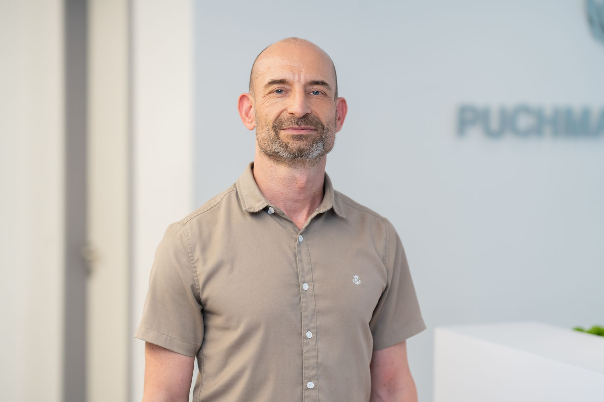
„Gute Zahntechnik entsteht nicht durch einzelne Geräte, sondern durch das Zusammenspiel aus Erfahrung, Materialverständnis und klarer Abstimmung mit der Praxis."
Der erste gehörlose Zahntechniker wurde vor der Auszeichnung sieben Jahre lang eingearbeitet und überzeugte durch fachliche Kompetenz. Heute arbeiten vier gehörlose Fachkräfte im Labor.
Neben präziser Zahntechnik unterstützen wir Praxen im Alltag, persönlich und unkompliziert.
Schnell, freundlich und auf Ihre Abläufe abgestimmt.
Individuelle Abstimmung für natürliche Ergebnisse.
Unterstützung bei Farb- und Formreproduktion.
Gesichtsbogen, Clinometer und weitere Hilfsmittel nach Absprache.
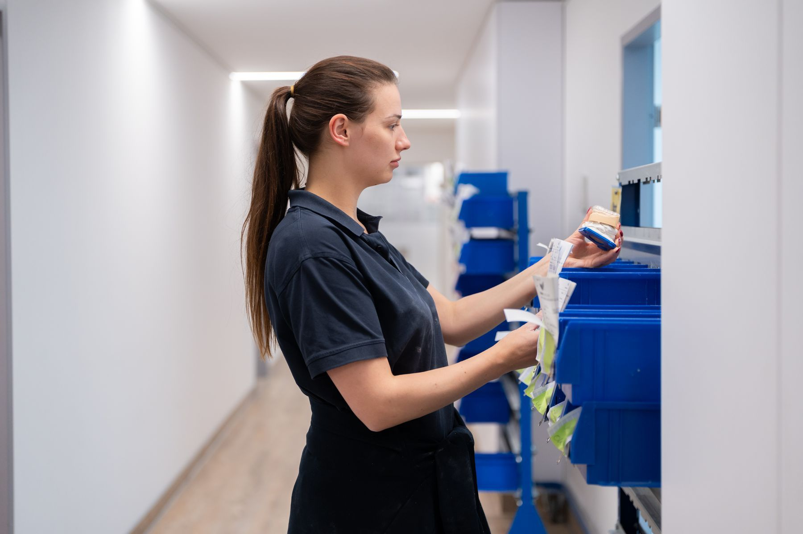
Puchmayr Dentaltechnik fertigt Vollkeramik aus Zirkonoxid und IPS e.max, Implantatprothetik von der Bohrschablone bis zur Suprakonstruktion, Kronen und Brücken inklusive NEM-Arbeiten, Aufbissschienen, Vollprothetik mit Interimsprothesen und digitalen Totalprothesen sowie Arbeiten aus 3D-Druck und CAD/CAM-Fertigung.
Das Labor liegt in der Kelchstraße 23 in 12169 Berlin-Steglitz, im Ortsteil Südende. Parkplätze gibt es direkt in der Straße. Erreichbar ist das Labor montags bis donnerstags von 08:00 bis 17:30 Uhr und freitags von 08:00 bis 16:00 Uhr unter 030 7963315.
Ja. Das Labor verarbeitet digitale Unterlagen und Oralscandaten und bindet sie in die eigenen CAD/CAM- und 3D-Druckprozesse ein. Klassische Abdrücke werden ebenso verarbeitet, Praxen müssen ihren Arbeitsablauf also nicht umstellen.
Ja. Viele Arbeiten entstehen direkt im eigenen Labor in Berlin-Steglitz. Zur Ausstattung gehören CAD/CAM-Technik, 5-Achs-Frästechnik und 3D-Druck. Durch eigene Maschinen und eingespielte Prozesse bleibt die Qualität von der Planung bis zur fertigen Arbeit kontrollierbar.
Für Vollkeramik kommen Zirkonoxid und IPS e.max zum Einsatz. Kronen und Brücken werden auch als NEM-Arbeiten gefertigt. Für Modelle, Schienen und Prothetik nutzt das Labor eigene 3D-Druck- und CAD/CAM-Verfahren.
Puchmayr Dentaltechnik passt zu Praxen, die Wert auf Qualität, persönliche Abstimmung und verlässliche Ergebnisse legen. Wichtig ist eine Zusammenarbeit auf Augenhöhe, bei der fachliche Fragen direkt und lösungsorientiert besprochen werden.
Der Einstieg beginnt mit einem kurzen persönlichen Gespräch, entweder in der Praxis oder im Labor in Berlin-Steglitz. Danach wird geklärt, wie Fälle, Scans und Abdrücke übermittelt werden. In der Regel startet die Zusammenarbeit mit einzelnen Arbeiten und wird Schritt für Schritt ausgebaut.
Zum Service gehören ein eigener Kurierservice, individuelle Farbnahme und Beratung, Fotodokumentation zur Farb- und Formreproduktion sowie Leihgaben wie Gesichtsbogen und Clinometer nach Absprache.
Puchmayr Dentaltechnik wurde am 20. November 2024 mit dem Berliner Inklusionspreis in der Kategorie Inklusive Beschäftigung, Mittelständische Unternehmen ausgezeichnet. Das Labor beschäftigt 30 Mitarbeitende, darunter vier gehörlose Fachkräfte. Die Beschäftigungsquote von 13,3 Prozent liegt weit über den gesetzlichen Vorgaben. Vergeben wurde der Preis vom Land Berlin über das Landesamt für Gesundheit und Soziales.
Den Grundstein des Dentallabors legte Harry Puchmayr im Jahr 1966. Heute wird das Unternehmen in zweiter Generation von seinem Sohn Oliver Puchmayr geführt. Damit bringt Puchmayr Dentaltechnik 60 Jahre zahntechnische Erfahrung in Berlin mit.
Zahntechnik erfordert nicht nur moderne Ausstattung, sondern auch Materialverständnis, handwerkliches Können und ein Gefühl für Funktion und Ästhetik. Puchmayr Dentaltechnik bringt 60 Jahre zahntechnische Erfahrung mit und setzt damit auch individuelle Anforderungen sauber um.
Der beste Start ist ein persönliches Kennenlernen. Schreiben Sie uns kurz, worum es geht, wir melden uns innerhalb eines Werktags zurück.
Rufen Sie uns an. Sie landen bei jemandem, der Ihre Frage fachlich beantworten kann.
Kelchstr. 23
12169 Berlin-Steglitz
Mo–Do 08:00–17:30 Uhr
Fr 08:00–16:00 Uhr
Anfahrt auf der Karte ansehen
Erst mit dem Klick wird eine Verbindung zu Google Maps aufgebaut und Ihre IP-Adresse an Google übertragen.
Kelchstr. 23, 12169 Berlin-Steglitz.
Parkplätze finden Sie direkt in der Straße.